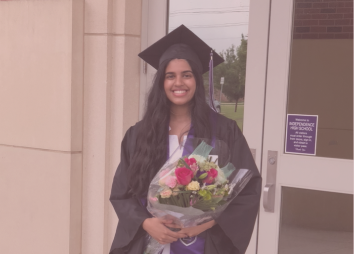
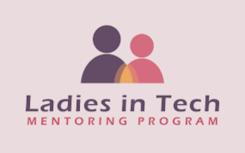
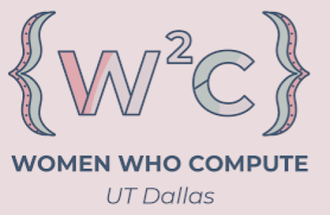

Bachelor's Degree | Fall 2021 - present
Major: Computer Science
High School Degree | Fall 2020 - Spring 2021
Honors: Cum Laude
Fall 2017 - Spring 2020
Honors: AP Scholar, Scholar Athlete

I started off my high school journey in my hometown, Jefferson City. During my time there, I played varsity tennis and was secretary for an environmental awareness club. Before senior year, I moved to Texas and finsihed up high school. At UTD, some of the coursework I have taken are: Discrete Mathematics II, Data Structures & Algorithms, Programming Language Paradigms, Systems Programming in Unix/Linux Environments, and Statistics for Computer Science. I look forward to taking more classes and learning new skills! My last internship was at Helmerich & Payne, where I got to explore data visualization of rig data using Python and Jupyter Notebooks. I built a project that analyzed the data of oil rigs during backouts and detrmined similarities within the data.
Liason Chair
LIT is a mentoring program dedicated to help new students feel connected to their major and other women in tech through mentorship. I started off as a mentee for this program during my first year at UTD. Currently, I am the Liaison Chair for this program. I'm in charge of managing the commincation of events/opportunities to members and maintaining relations with other engineering/computer science organizations.
Treasurerr
WWC is an organization that focusses on giving women in STEM fields oppotunities to grow and become sucessful in their future careers. Companies are able to host techinal workshops and networking events through this organization. Currently, I am the Treasurer. My job in involves keeping track of WWC finances, budgeting, and creating an uplifting environment for women through our events.

